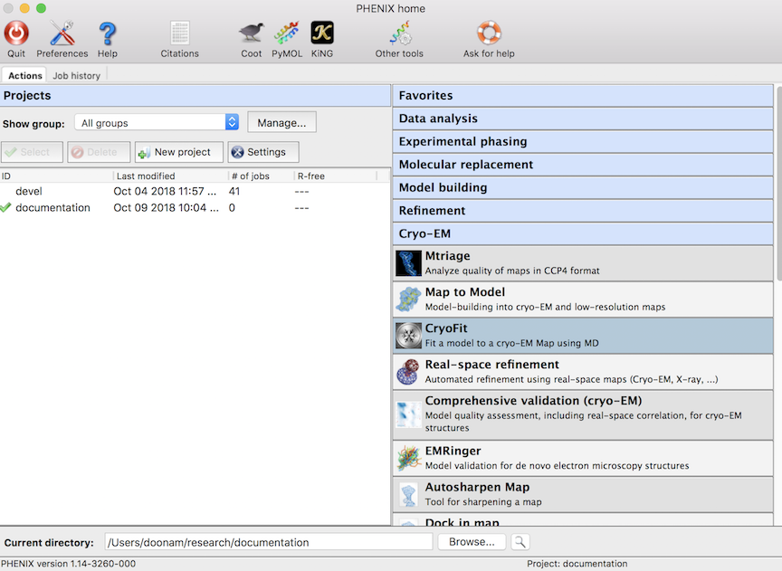
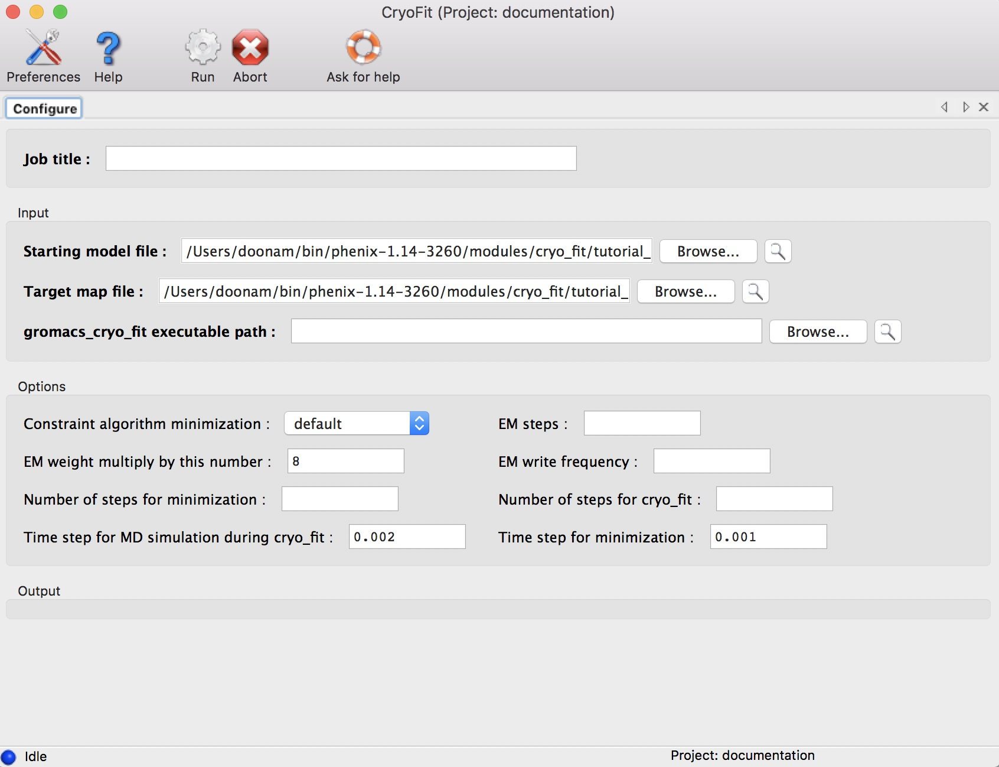
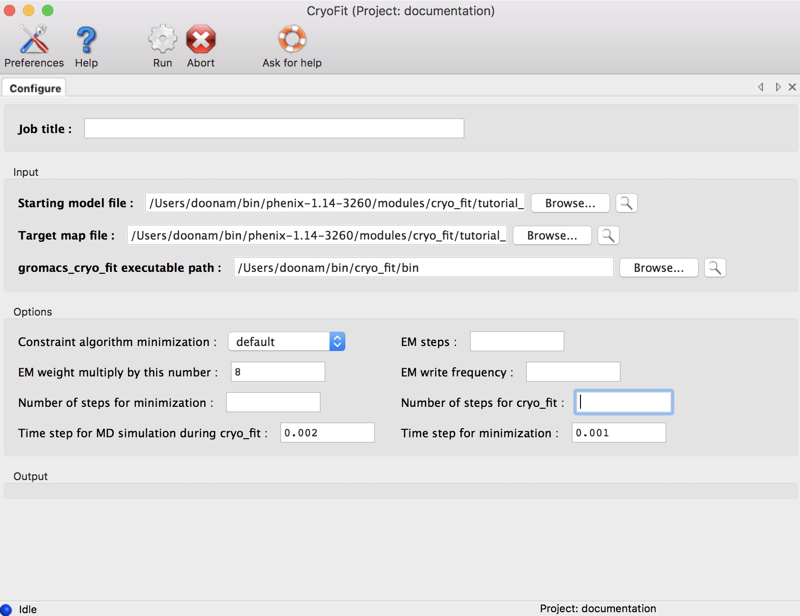
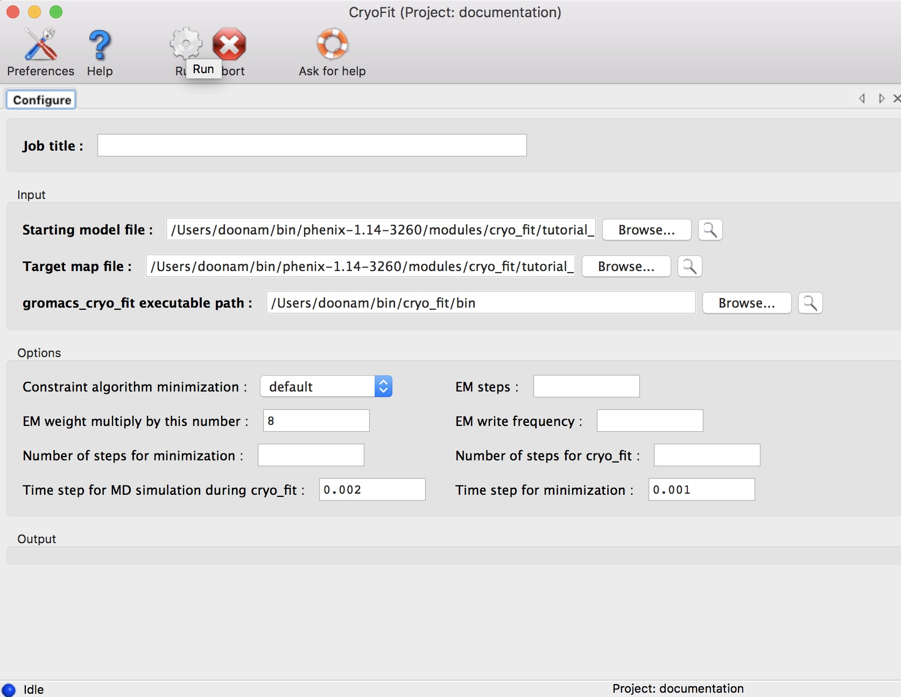
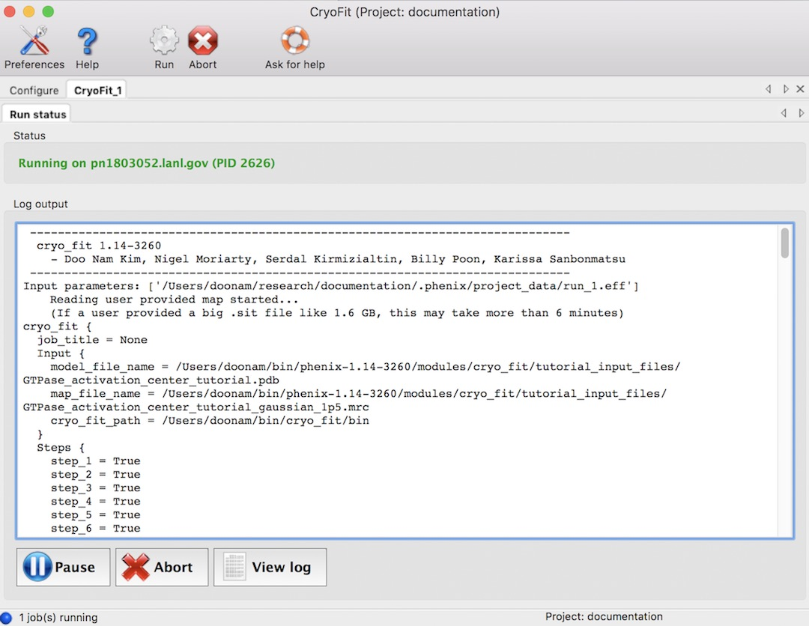
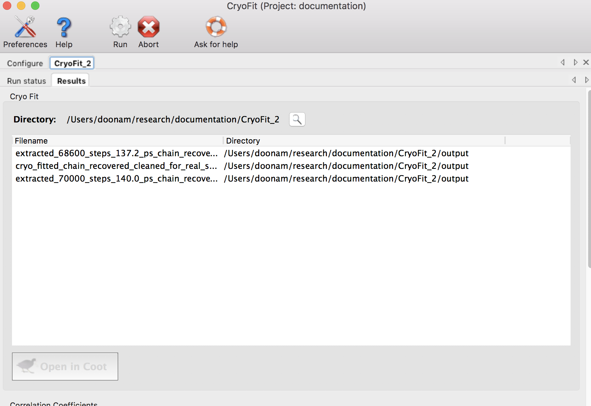
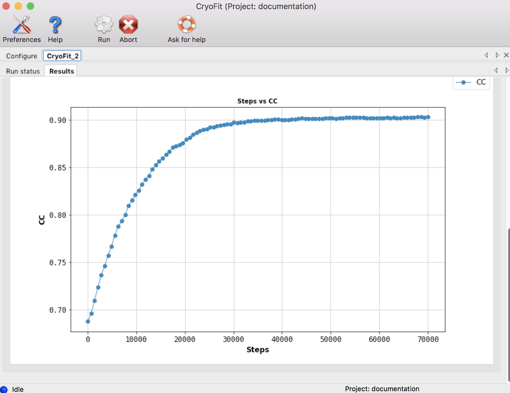

This tutorial will show you how to fit biomolecular structures into cryo-EM maps with molecular dynamics (MD) simulation using Cryo_fit in the PHENIX graphical user interface (GUI).
For command-line tutorial, please see the cryo_fit_commandline_tutorial
Theoretical explanation of cryo_fit is here
For Cryo_fit installation, please see the installation notes for cryo_fit
<initial_model> and <target_map>
Target Map: .ccp4, .map/.mrc (MRC style binary file), or .sit (Situs style text file)

Click browse buttons.
(Tutorial input files are in $PHENIX/modules/cryo_fit/tutorial_input_files)

(This step is optional if you've already setup your Cryo_fit environment in your .cshrc/.bashrc as instructed during Cryo_fit installation.)
Click browse buttons.
(select for example, $PHENIX/modules/cryo_fit/gromacs/bin)

All options can be left blank (cryo_fit will figure out all options automatically).

It should start something like this (total steps are 1~8).

Running time (With 2.7 GHz CPU, macOS)
All default values, it took ~2 minutes. With 10k steps, it took ~9 minues


Output files are in steps/8_cryo_fit folder. These include --
The final fitted atomic model: cryo_fitted.pdb
The .gro and .pdb files from the structures with the highest 3 map-model correlation coefficients (CC): extracted_x_steps_x_ps.gro/pdb (.gro files are for visualization with vmd)
The history of CC values: steps/8_cryo_fit/cc_record
Gromacs4.5.5 does not handle water molecules in structure files. Cryo_fit will remove any water from the input coordinate before starting.
Cryo_fit doesn't handle less commom monomers such as 7C4, BMA, GDP, ILX, NAG, SEP, TRX. It will simply exclude those monomers and report what are excluded.
S. Kirmizialtin, J. Loerke, E. Behrmann, C. MT. Spahn, K. Y Sanbonmatsu, Using Molecular Simulation to Model High-Resolution Cryo-EM Reconstructions, Methods Enzymol., 558, 2015, 497-514
| Option | Default value | Description of inputs and uses |
| emweight_multiply_by | 8 | Multiply by this number to the number of atoms for weight for cryo-EM map bias. For example, emweight = (number of atoms in gro file) x (emweight_multiply_by which is 8) The higher the weight, the stronger bias toward EM map rather than MD force field and stereochemistry preserving constraints. If user's map has a better resolution, higher value of emweight_multiply_by is recommended since map has much information. If user's map has have a worse resolution, lower value of emweight_multiply_by is recommended for more likely geometry. If CC (correlation coefficient) needs to be improved faster, higher number of emweight_multiply_by is recommended. |
| nproc | max cores | Specify number of cores for minimization and cryo_fit. If it is not specified, or max is chosen, the cryo_fit will try to use most cores automatically (up to 16) |
| number_of_steps_for_cr yo_fit | None | This is the initial number of steps for cryo_fit. Eventually, cryo_fit will increase it depending on molecule size and cc trend. For tutorial files, this will be 70,000 |
| number_of_steps_for_mi nimization | None | Specify number of steps for minimization. If this is left blank, cryo_fit will estimate it depending on molecule size.number of steps for cryo_fit. Enough minimization will prevent "blow-up" during MD simulation later. |